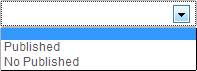

You just installed one of AdsManager Pack and you want to know how to use it. There are two ways to create ads, one by the administration, one with front-end.
When you install AdsManager, nothing is displayed on your website. You have to add a link to your menu, let's do it step by step.
First, add a link to the menu that corresponds to AdsManager.

Click on the "Select" button of the "Menu Item Type" field.
After click on the "Select" button next to "Menu Item Type" you can click on "AdsManager" and pick the view you want to display. I pick the "Home" option to display the home webpage of AdsManager.
Just type the title you want, fill options if you want to. I don't need it so i just save my new link menu. You can choose to set the home AdsManager as the default web homepage of your website by clicking on "Yes" for the field "Default Page". You also can do it on the list view of your items menu as shown below.
Switch to the frontend, just access the home webpage.
You still can see the link to the menu on the right. To write an ad just click the link "Write an ad" which is surrounded by red color whatever your language is. Other links on this page and descriptions are explained in the Beginners Guide.
Depending on your configuration you can see two different things. If you selected the option that states an ad can only be classed in only one category, then you'll have this view.
You can choose the way the categories will be displayed,
check the "Categories" tab in Configuration.
Choose a category or a subcategory and then you'll acces
the form to create an ad.
If you are in multicategories, you'll see this:
Check Configuration if you dont know how to do it.
The number or categories you can choose is limited in the configuration, be sure you wrote the correct number, it's written just below the textareas.
To select a category, just click on it in the left area and then click on "Add" button. Do the same thing but click on "Delete" button to unselect it.
The form is pretty simple, it contains required and not required fields signaled by a blue background-color for the required ones. You can decide which field is required or not in the Fields view (check on the Create fields ). The form contains all fields (default and the fields you created) published. Conditional fields work here too, read Create fields too.
Here you can see the required fields cause they have blue background color.
Here you can choose pictures to associate with the ad. The number of pictures allowed is into the Configuration. Then click "Add files", wait until it's ready.
The form is the same as the one in the front-end above. In addition you can sort your ads on the view list by filters.
There are three filters and option for pagination in top of this page.
Categories filter
You can select only ads belong to certain category or subcategory or all ads from all categories.
Published filter
You can select whether you want to display published or unpublished ads.
User filter, ID filter and Pagination

Here we can see three different filters. First the user filter, you can type name of an user here and it will filter showing you only ads from this user. You're not forced to type the entire name, here, typing "Are" will still get you the result. You can type part of name til it's entirely contained in the effective name.If you know the ID of the ad you're looking for, you can type it here and leave others filters empty. Typing '0' will show all ads.
You can choose how many ads you want to display here by selecting a pagination.
Based on Configuration settings you will be asked to create an account/log in or not.
The filters are cumulative. The ads displayed will satisfy every filter modified. Eg. here, you can see there's an ad with id 3, if I type "3" in the ID filter but "Nobody" in the user filter, no ad will be displayed, just erase what you just type in user filter to see the ad with id 3.
Just fill all the fields you need, use Create fields , save.